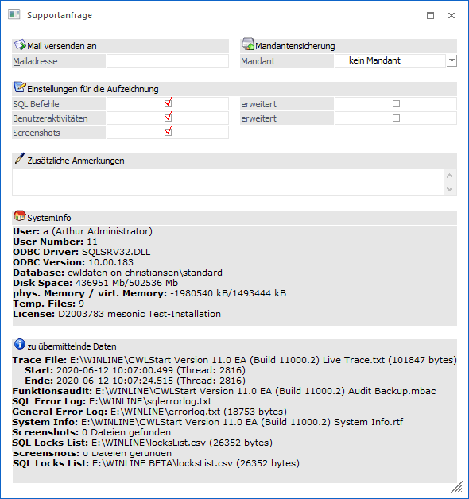
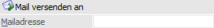
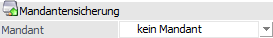
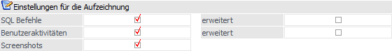
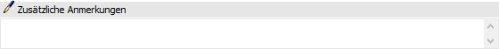
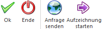

Die Supportanfrage können Sie in jeder Applikation unter
1 Hilfe
1 Supportanfrage
aufrufen. Mit diesem Menüpunkt haben Sie die Möglichkeit, alle Daten wie z.B. Mandantensicherung, Funktionsaudit oder auch log-Dateien in einer ZIP-Datei zu speichern, nachdem eine Aktion nicht ordnungsgemäß durchgelaufen ist oder ein Problem festgestellt wurde.

Folgende Einstellungen stehen zur Verfügung:
Mail senden an

Ø Mailadresse
Hinterlegung einer eMail-Adresse an die die Daten gesendet werden
Mandantensicherung

Ø Mandant
Auswahl des gerade aktuellen Mandanten bzw. keine Mandantensicherung.
Einstellungen für die Aufzeichnung

Ø SQL-Befehle (einfach und erweitert)
Es werden alle SQL-Befehle dokumentiert. Bei den erweiterten SQL-Befehlen werden nicht nur die Aktionen dokumentiert, sondern auch die Werte, die in die Datenbank zurückgeschrieben werden.
Hinweis
Bei den erweiterten SQL-Befehlen wird das Trace entsprechend sehr viel größer, als die einfache Ausgabe.
Ø Benutzeraktivitäten (einfach und erweitert)
Es werden alle Programmaktionen protokolliert. Bei den erweiterten Benutzeraktivitäten werden auch jene Aktivitäten protokolliert, die die aufgerufene Bildschirmmaske verändern.
Hinweis
Bei den erweiterten Benutzeraktivitäten wird das Trace entsprechend sehr viel größer, als die einfache Ausgabe.
Ø Screenshots
In gewissen Abständen werden automatisch Screenshots erstellt, die den Programmablauf dokumentieren sollen und die in weiterer Folge auch weitergeleitet werden können.
Zusätzliche Anmerkungen

Ø Zusätzliche Anmerkungen
Über das Textfeld "Zusätzliche Anmerkungen" können noch eigene Texte z.B. zur Vorgehensweise hinterlegt werden.
Buttons

Ø Ok
Durch Anklicken des Buttons "Ok" bzw. durch Drücken der F5-Taste wird die ZIP-Datei erstellt und die Datei per Mail versendet.
Ø Ende
Durch Anklicken des Buttons "Ende" bzw. durch Drücken der ESC-Taste werden alle Eingaben verworfen und das Fenster wird geschlossen.
Ø Anfrage senden
Über diesen Button können Sie die aufgezeichneten Daten per eMail versenden, sofern Sie eine gültige Mailadresse angegeben haben. Dabei werden sämtliche erstellten Daten in der ZIP-Datei "Supportanfrage.zip" zusammengefasst und an das Mail angehängt.
Hinweis
Folgende Dateien werden übermittelt:
ü Mandantensicherung
ü Sicherung des Audits
ü Screens, die während der Supportanfrage vom Programm erstellt wurden
ü Systeminformationen des Kunden
ü Trace bzw. Live-Trace
ü errorlog.txt sowie sqlerrorlog.txt
Ist eine Mailadresse hinterlegt wird bei Betätigen des Buttons "Ok" der Versand ausgeführt.
Ø Aufzeichnung starten /Aufzeichnung beenden
Die Aufzeichnung wird aktiviert.
Führen Sie die Aktionen aus, die zum Problem geführt haben.
Anschließend können Sie über den gleichnamigen Button die Aufzeichnung beenden.
Hinweis
Die dabei erstellten Dateien werden mit der jeweiligen WinLine-Version im Dateinamen erstellt, z.B.
"CWLStart Version 11.0 (Build 11000) System Info.rtf". Ist eine Mailadresse hinterlegt, so wird bei Betätigen des Buttons "Ok" der Versand ausgeführt.